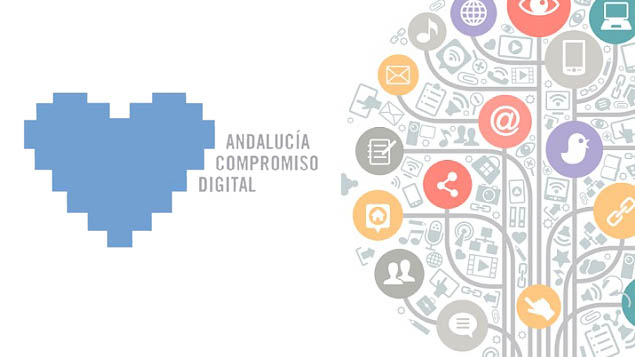

CHRISTIAN ANDRADES MOLINA
Datos personales
- Dirección: Calle Justo Sansalvador, bloque 2, 3C. Algeciras, Cádiz.
- Fecha de nacimiento: 08/03/1993
- E-mail:christianandradesmolina@outlook.es
- Linkedin: linkedin.com/in/christianandradesmolina
Formación Complementaria
- 2020. Curso de formación: Magic y metodologías Agile para gestión de proyectos IT: Magic, ERP Bemagic, Power BI y Coaching. Besoftware. 140h.
- 2019. Inglés B1. Certificado por la Universidad de Cambridge, Julio 2019.
Proyectos realizados
- Desarrollo de una aplicación multimedia que permite gestionar diferentes tipos de medios de forma integral: gráficos, imágenes, sonido y vídeo.
- Creación de una aplicación web con una documentación completa de requisitos, funcionalidad y descripción de la solución.
- Desarrollo de un modelo jerárquico articulado dentro de una escena con uso de materiales, fuentes de luz y texturas en OpenGL.
- Creación de una biblioteca digital mediante Greenstone.
- Trabajo de fin de grado basado en la aplicación de patrones de diseño al desarrollo de software ágil con una implementación propia de las metodologías ágiles en proyectos SCRUM.
